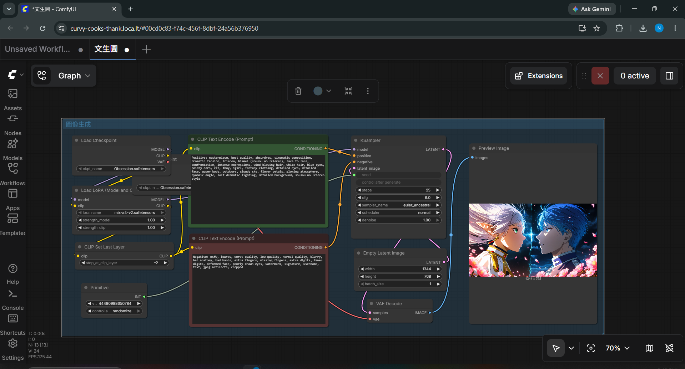
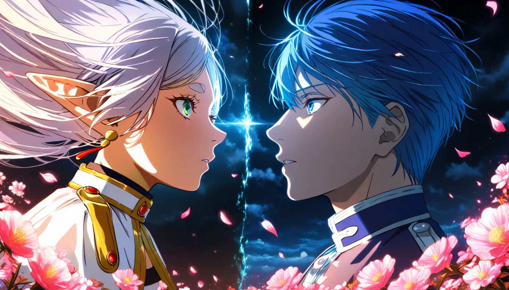
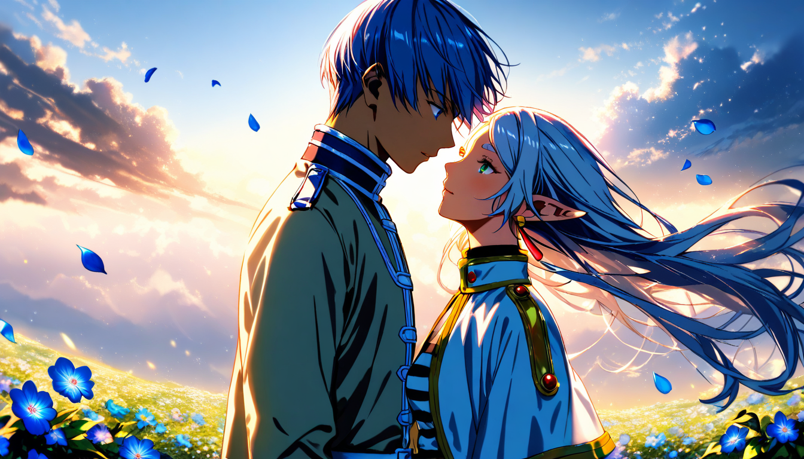

| 總分 | 完成後打勾 | 配分 | 分項描述 |
|---|---|---|---|
| 4 | Simple baseline - 完成ComfyUI建置 | ||
| 4 | Medium baseline - 完成芙莉蓮文生圖 | ||
| 2 | Strong baseline - 替換模型完成辛梅爾文生圖 | ||
| -10 | 沒有寫100字心得 |

1344 * 768
Positive: masterpiece, best quality, absurdres, cinematic composition, dramatic tension, frieren, himmel (sousou no frieren), face to face, confrontation, intense expressions, wind blowing hair, white hair, blue eyes, pointy ears, elf, 1boy, 1girl, fantasy clothing, detailed eyes, detailed face, upper body, outdoors, cloudy sky, flower petals, glowing atmosphere, dynamic angle, soft dramatic lighting, detailed background, sousou no frieren style
Negative: nsfw, lowres, worst quality, low quality, normal quality, blurry, bad anatomy, bad hands, extra fingers, missing fingers, extra digits, fewer digits, deformed face, poorly drawn eyes, watermark, signature, username, text, jpeg artifacts, cropped

1344 * 768
LoRA1 Strength : 0.5
LoRA2 Strength : 0.45
Positive: masterpiece, best quality, great score, absurdres, frieren, himmel (sousou no frieren), pointy ears, elf, 1girl, 1boy, face to face, tense moment, emotional confrontation, fantasy atmosphere, white hair, long hair, detailed eyes, flowing hair, upper body, outdoors, flower petals, blue flowers, sky, soft wind, detailed clothing, earrings, jewelry, striped shirt, looking at each other, dramatic lighting, cinematic composition, detailed background, sousou no frieren
Negative: nsfw, lowres, worst quality, low quality, normal quality, blurry, bad anatomy, bad hands, missing fingers, extra fingers, extra digits, fewer digits, deformed face, poorly drawn eyes, text, error, signature, watermark, username, artist name, jpeg artifacts, cropped
